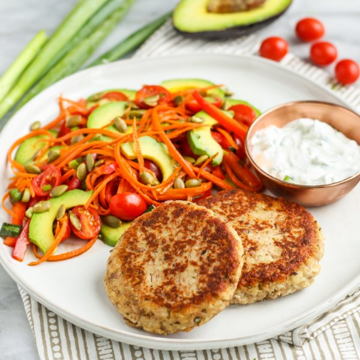

Tuna Fritters with Basil-Scallion Sauce & Crunchy Carrot Avocado Salad

Nutrition (per serving)
630.2 kcalCalories
44.1 gProtein
37.5 gCarbs
36.8 gFat
Full nutrition table
| Calories | 630.2 kcal |
| Total fat | 36.8 g |
| Saturated fat | 5.9 g |
| Trans fat | 0.1 g |
| Cholesterol | 129.6 mg |
| Sodium | 500.3 mg |
| Carbohydrates | 37.5 g |
| Fiber | 12.4 g |
| Sugars | 13.7 g |
| Protein | 44.1 g |
| Potassium | 1644.8 mg |
| Calcium | 242.1 mg |
| Iron | 5.7 mg |
| Vitamin A | 1992.6 IU |
| Vitamin C | 71.9 mg |
| Vitamin D | 74.4 IU |
Cookware
Ingredients
- 2avocados
- 4 mediumcarrots
- 4 (6 oz) canschunk light tuna in water
- 2eggs
- 1 small pkgfresh basil
- 2 clovesgarlic
- 2 pintsgrape tomatoes
- 1 small bunchgreen onions (scallions)
- 1 ½ cupsplain Greek yogurt
- ¼ cuppumpkin seeds
- 2red chili peppers
- balsamic vinegar
- black pepper
- extra virgin olive oil
- oregano, dried
- panko bread crumbs
- salt
Steps
- Wash and dry the fresh produce.1 small bunch green onions (scallions)
4 medium carrots
2 pints grape tomatoes
2 red chili peppers
2 avocados
1 small pkg fresh basil - Place oil, vinegar, salt, and pepper in a large bowl; whisk to combine the dressing.2 tbsp extra virgin olive oil
4 tsp balsamic vinegar
½ tsp salt
¼ tsp black pepper - Trim and mince green onions; add half to the bowl with the dressing. (Place remaining green onions in a small bowl and set aside for the sauce.)
- Peel, trim, and julienne or coarsely grate the carrots; add to the bowl with the dressing.
- Halve tomatoes and add to the bowl.
- Halve chili peppers lengthwise; seed and remove ribs with a spoon. Thinly slice crosswise and add to the bowl. (Be careful with chili peppers; do not touch your eyes and ensure you wash your hands after handling or wear gloves while preparing.)
- Halve and pit the avocados; slice crosswise while still in the skin and scoop out with a spoon. Add to the bowl along with the pumpkin seeds. Gently stir to combine the salad and set aside.¼ cup pumpkin seeds
- Drain tuna, place in a medium bowl, and flake with a fork.4 (6 oz) cans chunk light tuna in water
- Peel and mince garlic; add to the bowl with the tuna.2 cloves garlic
- Add eggs, bread crumbs, yogurt, and spices to the bowl; stir well to combine the tuna mixture.2 eggs
⅔ cup panko bread crumbs
½ cup plain Greek yogurt
1 tsp oregano, dried
½ tsp salt
¼ tsp black pepper - Using a ⅓-cup measure, form the tuna mixture into ½-inch thick fritters; place on a large plate.
- Preheat a large skillet over medium-high heat.
- Once the skillet is hot, add oil and swirl to coat the bottom. Add fritters and cook until golden and warmed through, 3-4 minutes per side. Remove from heat.2 tbsp extra virgin olive oil
- While the fritters are cooking, pick basil leaves off the stems, roll up crosswise, and thinly slice into ribbons. Add basil, yogurt, salt, and pepper to the bowl with the remaining green onions. Stir to combine the sauce.1 cup plain Greek yogurt
⅛ tsp salt
⅛ tsp black pepper - To serve, divide fritters, salad, and sauce between plates. Enjoy!